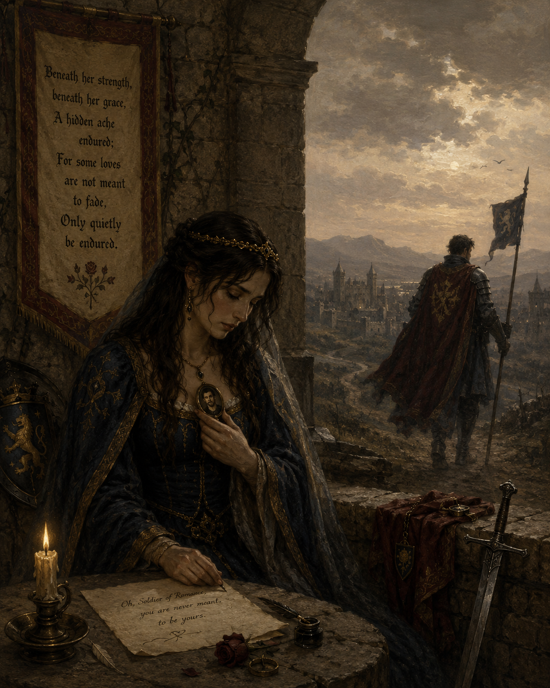

Unspoken: Poems of Love and Memory

A Cherished Wound
🎵 "The Rowan Tree.mp3" — g_parry0 (Pixabay Music)

🎵 "The Rowan Tree.mp3" — g_parry0 (Pixabay Music)

Oh, Soldier of Romance,
She was never meant to be yours.
You felt cheated and deceived,
Yet never knew what lay beneath.
She buried her heart deep inside,
for she had dreams she must pursue.
her shoulders weighed down by responsibilities,
And love was among her last priorities.
She has carried your love within her heart
and the memory of your love
Throughout her lonely life,
in silence and in sorrow.
Though seasons passed and years grew old,
your name remained unspoken,
a cherished wound she could not heal,
a promise time had left unbroken.
Beneath her strength, beneath her grace,
A hidden ache endured;
For some loves are not meant to fade,
only to linger beyond their time.